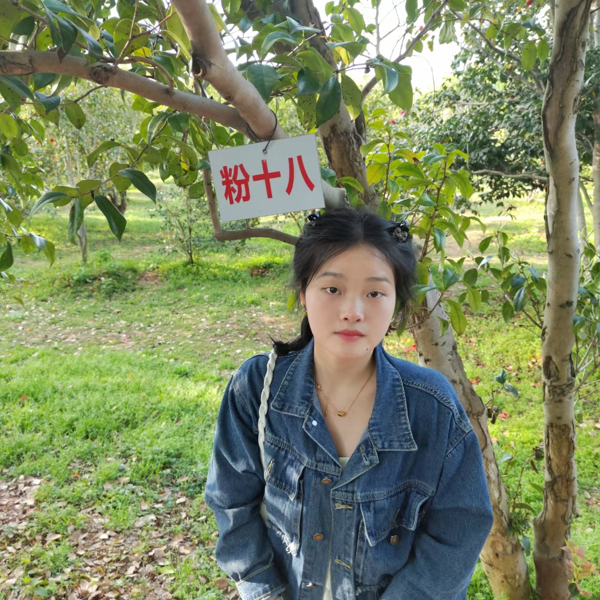

个人简历
基本信息
姓 名 ：张永红
民 族 ：汉
电 话 ：18797910931
邮 箱：3306714690@qq.com住 址：江西省赣州市于都县
教育背景
出生年月：2003.06.22身 高：160cm
政治面貌： 团员
毕业院校：井冈山大学学 历：本科
2020.09-2023.06 井冈山大学 公共事业管理
主修课程：公共事业管理概论 公共管理学 大学英语 管理学原理 微观经济学 公共财政概论
实习经历
2020.07-2020.09 浩艺轩教育辅导中心 授课教师
1．根据教学计划，负责小学一年级数学教学，三四年级语文教学授课工作
2.跟进课后学社工作业辅导答疑
3.对接学生家长，做好教学反馈工作
2021.12-2022.02 北京百思特迅捷科技有限公司 客户助理
1.兴业银行下发客户名单积极响应银行号召给名单客户推荐分期业务
2.提供定向服务，为客户分析业务确保办的满意
3.向客户积极介绍业务并邀请客户办理
校园经历
2020-2022 学校
活动组织：共同完成班级”青韵文化节”闭幕式活动表演。指导”职业擂台赛之礼仪”比赛。积极参加系级抗疫演讲大赛
获得校级三等奖学金，小学数学 NTCE，普通话二甲
2023.05 小红书营销
在小红书做线上营销，主要内容是在小红书平台发布自己的网课业务，利用热点话题给自己业务增加曝光率。
自我评价
在小红书平台营销过业务，熟知推广套路，善于利用热点话题增加帖子曝光率，在百思特迅捷科技有限公司实习期间成为新人小组第一名，本人有着突出的公共服务意识，具有良好的公共关系意识，善于沟通，具备活动策划和组织协调能力。良好的心态和责任感，吃苦耐劳，善于管理时间，勇于面对变化和挑战。擅长运用 word excel PowerPoint 等办公软件，接受能力强，有着线上营销的经验，对数据较为敏感，网感强。